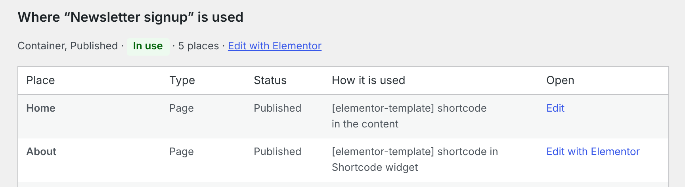
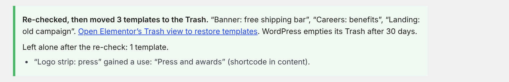
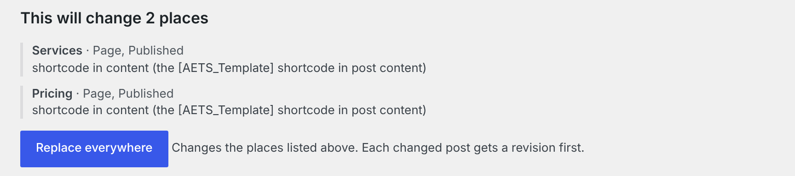
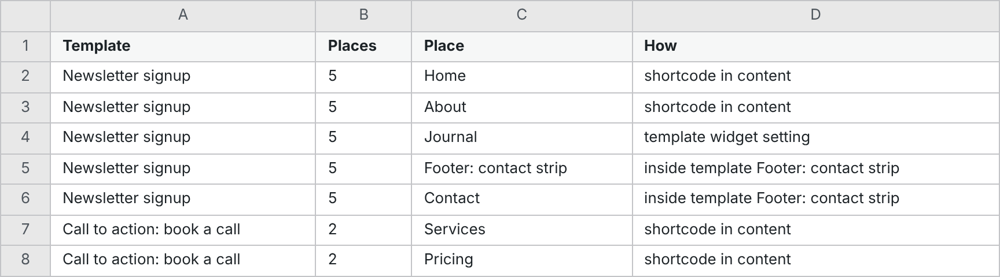
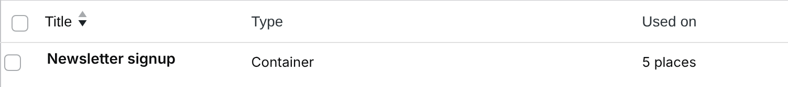

Templatrail for Elementor
“I’m pretty sure I have a load of templates that are no longer used anywhere.” (a user on Elementor’s GitHub issue tracker)
Press Scan site and Templatrail shows the pages that use each saved Elementor template, and lists the ones with no use found.

The first two of its five places.The first of its five places.
- See where each template is used: the pages, posts and templates that hold it.
- Clear out templates with no use found: re-checked first, into WordPress’s Trash, restorable.
- Replace everywhere (Pro): points the pages that used one template at another.
Free: templatrail.zip 1.0.6, report and cleanup
Pro, $19 once: Replace everywhere (points the pages that used one template at another) and CSV export. Buy for $19
Tested on WordPress 7.1.5 and 6.8.3, PHP 8.3 and 7.4, Elementor 4.4.1 · source code included · support@ochrestack.com
Watch it work
Clear out templates with no use found
Only those can be ticked. Move selected to Trash re-reads the site first, skips any that gained a use, and uses WordPress’s own Trash, so you can restore. Nothing is deleted for good. No use found means no use was found in the places Templatrail reads, not that nothing uses the template; Check by hand marks what it cannot judge.
Templatrail Pro
Replace everywhere points the places that used one template at another of the same kind (both stay in your library): pick the replacement, check the places listed, confirm; each changed post gets a revision first. Export CSV saves the last scan’s report. Global widgets, popup links, Components, Maintenance Mode, template blocks, titles, custom fields and site settings are listed, not replaced. Pro is for repeating one clean-up across many pages or client sites, such as a rebrand that left a copy of “Call to action: book a call” behind; for one site and a clear-out, the free plugin does the whole job.
$19 once, unlimited sites, no renewal · free plugin inside the Pro zip · checkout by Polar · 14-day refund if it doesn’t work as described and we can’t fix it
New versions of Pro are free, and we don’t push them to your site (Pro never contacts a server): download the new file from your Polar purchase and upload it with Replace current with uploaded (steps).
More pictures




Questions
Could a template that is still in use show as No use found?
Yes. Templatrail counts only a use it can read. A template placed from a PHP theme file, or by a plugin that keeps its references in its own database table, can show as No use found while a page still shows it. That is why Move selected to Trash re-reads the site first, why anything it cannot judge is Check by hand, and why the Trash can be restored.
Why does a template I inserted show no uses?
In free Elementor, inserting a saved template into a page copies it. The copy no longer points at the original, so it is not a use, and the Templatrail screen says so.
Does it work with Elementor Pro?
It reads the saved data Elementor Pro writes for its Template and Loop Grid widgets, global widgets, popup links (the Popup tag and Elementor’s popup action address) and display conditions. Elementor Pro itself was not part of the tests (we have no license for it): those formats were tested as saved data.
What counts as a use, and what is not read
- Template shortcodes, in post content and excerpts, custom fields, Elementor’s Shortcode, Text Editor and HTML widgets, classic widgets and site settings: Elementor Pro’s template shortcode, Show template by shortcode for Elementor and UltraAddons for Elementor.
- Elementor settings that hold a saved template’s ID, at any depth up to 40 levels: the Template and Loop Grid widgets, Essential Addons for Elementor’s Advanced Tabs, and global widgets. Elementor Template blocks, a template an add-on picks by title (Premium Addons for Elementor), popup links (the Popup tag or Elementor’s popup action address), Component instances and the Maintenance Mode template.
- Not read: term, user and comment fields; menus; PHP theme files; plugins’ own database tables; other add-ons’ own template post types; WPML and Polylang links; the other sites of a multisite network. A template an add-on picks by title cannot appear under Missing templates.
What else is in the free plugin?
- Templates inside templates are followed to the pages that show the outer one; a loop of templates pointing at each other is stopped and reported.
- Missing templates lists pages that still point at a template that was deleted or is in the Trash, with Edit and, for the Trash, Restore the template.
- Scan site reads your posts in batches with a progress bar; Scan again starts over.
Details
- Quick start: install, first scan, clean up, Pro. Privacy: neither plugin contacts any server.
- GPL-2.0-or-later, source code included. Pro is a separate plugin that needs the free one. Support: support@ochrestack.com.
- Not on WordPress.org yet: the free plugin is the download above. Refund: email us within 14 days of purchase if Templatrail Pro doesn’t work as described and we can’t fix it (terms). Not run: a web server on Windows or macOS, and any browser but Chrome.
Not affiliated with or endorsed by Elementor or the add-ons named on this page.
How we tested
Templatrail and Templatrail Pro 1.0.6 pass 118 and 39 automated tests on Linux with PHP 8.3.6 and 7.4.33, WordPress 7.1.5 and 6.8.3, and Elementor 4.4.1. On our demo site, 15 of 38 saved templates had no use found.
The numbers behind this page
The tests use MariaDB 10.11 and a built site of 55 saved templates and Components. Real-window checks ran in Chrome, and a scan and Move to Trash also ran on WordPress 7.1.5 with the SQLite integration plugin.
On a generated 680-post site, a database search for each ID found a “use” for 38 of 40 unused templates, because the number also turns up in sizes and other IDs. Templatrail’s status was right for all 80 templates. A generated site of 42,004 posts and 2,000 templates scanned in about 25 seconds on a 4-core machine; the re-check of 500 selected templates took about 8 seconds (Templatrail 1.0.5).
The pictures and the film on this page are Templatrail 1.0.6 in Chrome on a local WordPress 7.1.5 with the SQLite integration plugin 3.1.3, served by PHP’s built-in server: the demo site, with Hello Elementor 3.5.2, Elementor 4.4.1, Essential Addons for Elementor 6.8.9 and Show template by shortcode for Elementor 1.0.4. The film is 40 seconds at 60 frames a second, captions only, no sound: it streams as a 7.5 MB file (windows under 768 px get the 26-second portrait cut, 3.1 MB) and the 1080p file is 16.1 MB. The demo’s pages hold the shortcode of Elementor Pro, [elementor-template], and the demo site has no Elementor Pro, so they are saved data for Templatrail to read, not pages that show the template. In the cleanup scene a second page is made with WP-CLI between the ticking and the click, to show the re-check leaving one template alone. The demo site shows one fixed time on its “Last scan” line, and the phone cut leaves WordPress’s toolbar out.